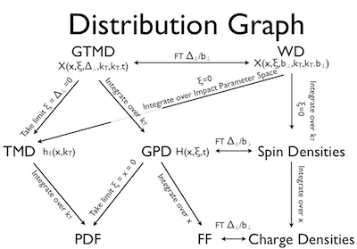

Nucleon structure is described using Parton Distribution Functions (PDFs), Form Factors (FFs), Generalised Parton Distributions (GPDs) and Transverse Momentum Distributions (TMDs). The inter-relationship of the distributions is complicated, as shown in Fig. 1.
Fig. 1: The relationships between the various distributions related to nucleon structure. Click for a bigger version.
Form Factors and PDFs are relatively well-known objects. Form Factors are measured in elastic ep scattering and describe the distribution on electric and magnetic charges within the nucleon. The PDFs are measured using Deep Inelastic Scattering (DIS) are describe the distribution of momentum and spin within the nucleon, i.e. the probability of finding a parton in the nucleon with a certain fraction of the nucleon's longitudinal momentum or with a certain spin.
The state-of-the-art in nucleon structure physics is represented by the two-dimensional TMDs (which correlate transverse and longitudinal momentum) and the three-dimensional GPDs, (which correlate longitudinal momentum and transverse spatial distribution). The two are accessed using Semi-Inclusive DIS (SIDIS) and exclusive scattering respectively.
Nucleon structure is usually examined using leptoproduction, where an electron, a muon or a neutrino is directed at a (typically) proton-rich target. Leptons are used because their structureless nature and well-defined behaviour allows easier analysis of the nucleon structure. We usually consider protons because they are easier to isolate in nature; Hydrogen is basically a proton nucleus and is easily accelerated, obtained in gaseous form for a gaseous target or bound in organic molecules to form a solid target.
One of the most widely studied forms of lepton-nucleon scattering is inclusive Deep Inelastic Scattering (DIS). In DIS, the lepton's intitial momentum is known (it's part of the beam) and the target proton can be either fixed in the laboratory frame, or accelerated. In medium-energy physics, we typically talk about fixed-target experiments; when the target is fixed in the lab frame, one can polarise it simply and access a wide range of useful observables relating to the nucleon's spin structure, as well as its spatial structure. If the target is unpolarised, then the range of information that is gained is more limited, although it is easier to boost the energy of the collision between the lepton and the proton and thus probe deeper into the nucleon.
In DIS, the spatial resolution with which you access the nucleon's structure is given by the reduced wavelength of the mediating virtual photon, calculated from the negative squared four-momentum of the photon Q2 and the Bjorken x-variable, xB. The relationship is given[1] by: λ = 2McxBℏ/Q2 i.e. if you have an experiment with a GeV2 Q2 and an xB, you access the nucleon on the scale of m. By comparison, the size of the proton system is estimated to be 1e-15m. Click on the experiment to set the example to represent the average kinematics of that experiment: CLAS HERMES COMPASS.
The amplitude of a 2nd-order sine wave with coefficients a0=, a1= and a2= is at position radians.
Generally speaking, this trignometric function is found by looking at the azimuthal distribution of particles, be they the scattered leton, the recoiling nucleon or a produced particle like a pion or a photon. The distributions of these particles are captured by detectors and can be represented as projected onto a plane, like below.
In this plot, particle states with positive values are shown in red, particles with negative values are shown in blue (we often look at helicity or charge). Each state has its own sinusoidal distribution and we can make a fit to the distribution by looking at event numbers as weighted for their various particle states. By trying millions of combinations of parameters for an equation that we expect to describe the distribution, we can figure out which numbers best match the underlying distribution that caused it all. From those numbers, we can calculate back limits and constraints on the GPDs and TMDs discussed at the top of the page.
{kind=link}